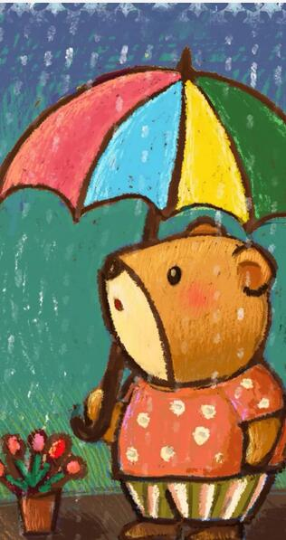
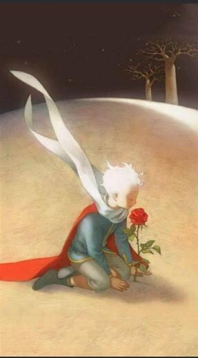
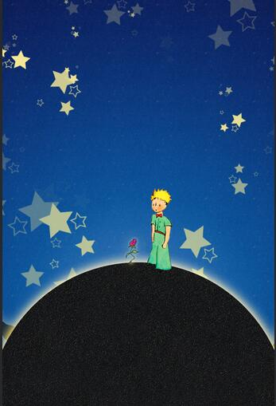

我们整天忙忙碌碌，像一群群没有灵魂的苍蝇，喧闹着，躁动着，听不到灵魂深处的声音。时光流逝，童年远去，我们渐渐长大，岁月带走了许许多多的回忆，也消蚀了心底曾今拥有的那份童稚的纯真，我们不顾心灵桎梏，沉溺于人世浮华，专注于利益法则，我们把自己弄丢了。
所有的大人都曾经是小孩，虽然，只有少数的人记得。
只有用心灵才能看得清事物本质，真正重要的东西是肉眼无法看见的
小王子在离开了玫瑰后才明白爱的道理："我那时什么也不懂！我应该根据她的行为，而不是她的话来判断她。她使我的生活芳香多彩，我真不该离开她跑出来。我本应该猜出在她那笨拙的假话背后所隐藏的情爱。玫瑰花是多么的自相矛盾！可是当时太年轻，还不懂得去爱她。"
我的花生命是短暂的，她只有四根刺可以保护自己，抵御世界，我却将她独自留在我的星球上了！


玫瑰花：＂我并非如此的弱不禁风...夜晚的凉风对我倒有好处。我是一朵花啊。＂
她天真地显露出她那四根刺，随后又说道： "别这么磨蹭了。真烦人！你既然决定离开这儿，那么，快走吧！"
她其实是不愿意让小王子看到自己哭泣。她曾经是多么高傲的一朵花……
玫瑰在小王子离开时这样说，我当然爱你，没有让你感觉到，是我的不对。